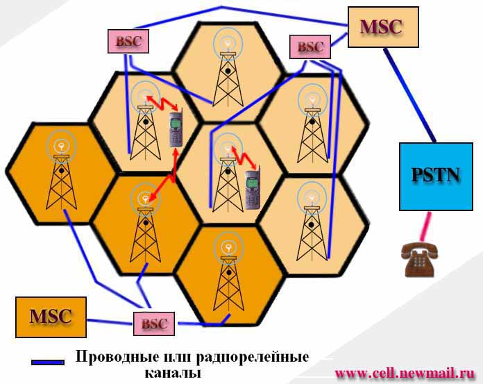

Основные принципы функционирования сетей сотовой связи

Несмотря на разнообразие стандартов сотовой связи, алгоритмы их функционирования, независимо от имеющихся особенностей, в основном сходны. Для абонента практически нет никакой разницы, в каком стандарте осуществляется связь. . Когда радиотелефон находится в режиме ожидания , его приемное устройство постоянно сканирует либо все каналы системы, либо только управляющие. Для вызова соответствующего абонента всеми базовыми станциями сотовой системы связи по управляющим каналам передается сигнал вызова. Сотовый телефон вызываемого абонента при получении этого сигнала отвечает по одному из свободных каналов управления. Базовые станции, принявшие ответный сигнал, передают информацию о его параметрах в центр коммутации, который, в свою очередь, переключает разговор на ту базовую станцию, где зафиксирован максимальный уровень сигнала сотового радиотелефона вызываемого абонента.
Сеть и ее составляющие .
Как уже известно, сети сотовой связи получили свое название в соответствии с территориальным принципом распределения малых рабочих зон (сот) . В центре каждой рабочей зоны расположена базовая станция (БС или BTS ), осуществляющая связь по радиоканалам с многими абонентскими станциями, установленными на подвижных объектах (автомобилях, у Вас в кармане ) и находящихся в ее рабочей зоне. Для каждой соты в рамках всей сети при проектировании проводится комплекс специальных мероприятий , в том числе и частотное планирование , которое учитывает условия распространения радиоволн и общую частотную обстановку ( средний уровень промышленных помех, сигналы от смежных базовых станций, и.т.п). Необходимо заметить, что проектирование сети сотовой связи - весьма трудоемкий и кропотливый процесс, несмотря даже на использование компьютерных систем. Учет всех параметров (количество каналов в выделенном частотном диапазоне, расчетная нагрузка на одного абонента, допустимая интенсивность потерь, минимальная приемлемая напряженность поля) и их топографическая привязка к планируемой зоне обслуживания, опять же , с учетом типа местности, существующих сооружений - все это требует больших трудовых затрат (не говоря уже о финансовой стороне дела). К тому же проектирование сети - это процесс бесконечный. Действующие сегменты сети выдают информацию о распределении трафика и приросте числа абонентов , и эта информация, в свою очередь, может влиять на составленные раньше проекты, дополняя и расширяя сеть.
Базовые станции сети через
контроллеры (BSC) соединены проводными телефонными (или радиорелейными)
линиями связи с центральной станцией данного региона ( города, области) -
MSC (Центр коммутации подвижной связи), которая
обеспечивает соединение мобильных абонентов с абонентами телефонной сети общего
пользования (ТФОП, или PSTN) с помощью коммутационных устройств. Таким
образом каждый MSC обслуживает группу сот, осуществляя при этом
переключение каналов в соте, эстафетную передачу абонентов между сотами,
формирует данные, необходимые для выписки счетов за предоставленные сетью услуги
связи, накапливает данные по состоявшимся разговорам и передает их в центр
расчетов (биллинг-центр). MSC составляет также статистические данные,
необходимые для контроля работы и оптимизации сети. На рис.1 группы сот
и соответствующие им MSC представлены разным цветом.
MSC не только
участвует в управлении вызовами, но также управляет процедурами регистрации
местоположения и передачи управления. Регистрация местоположения подвижных
станций необходима для обеспечения доставки вызова перемещающимся подвижным
абонентам от абонентов телефонной сети общего пользования или других подвижных
абонентов. Процедура передачи вызова позволяет сохранять соединения и
обеспечивать ведение разговора, когда подвижная станция перемещается из одной
зоны обслуживания в другую. Передача вызовов в сотах, управляемых одним
контроллером базовых станций (BSC), осуществляется этим BSC. Когда
передача вызовов осуществляется между двумя сетями, управляемыми разными BSC, то
первичное управление осуществляется в MSC. Таким образом, иерархию
управления в пределах одного MSC можно представить как взаимодействие
подсистемы базовых станций (BSS), включающей в себя BSC c несколькими
BTS, и MSC .
Кроме основных линий связи, соединяющих базовые станции с MSC, обязательно присутствуют резервные, принимающие абонентскую нагрузку в случае аварии на себя. Также резервированию подлежит и все основное оборудование сети ( коммутаторы, каналообразующие системы, сигнализация).

Рис.1
Эстафетная передача (ХЭНДОВЕР)
Во время набора номера радиотелефон занимает один из свободных каналов, уровень сигнала базовой станции в котором в данный момент максимален. По мере удаления абонента от базовой станции или в связи с ухудшением условий распространения радиоволн уровень сигнала уменьшается, что ведет к ухудшению качества связи. Улучшение качества разговора достигается путем автоматического переключения абонента на другой канал связи. Это происходит следующим образом. Специальная процедура, называемая передачей управления вызовом или эстафетной передачей (в иностранной технической литературе - handover, или handoff), позволяет переключить разговор на свободный канал другой базовой станции, в зоне действия которой оказался в это время абонент. Аналогичные действия предпринимаются при снижении качества связи из-за влияния помех или при возникновении неисправностей коммутационного оборудования. Для контроля таких ситуаций базовая станция снабжена специальным приемником, периодически измеряющим уровень сигнала сотового телефона разговаривающего абонента и сравнивающим его с допустимым пределом. Если уровень сигнала меньше этого предела, то информация об этом автоматически передается в центр коммутации по служебному каналу связи. Центр коммутации выдает команду об измерении уровня сигнала сотового радиотелефона абонента на ближайшие к нему базовые станции. После получения информации от базовых станций об уровне этого сигнала центр коммутации переключает радиотелефон на ту из них, где уровень сигнала оказался наибольшим. Это происходит так быстро, что абонент почти не замечает переключения (от 250 до 1250 мс). Необходимо заметить, что в цифровых системах сотовой связи время переключения меньше, чем в аналоговых. А в цифровом стандарте CDMA оно вообще отсутствует как таковое в силу использования технологии "softhandover", при которой до момента переключения и некоторое время после него , мобильной станции предоставляется одновременно два канала (старый и новый) связи, организуя тем самым своеобразный неразрывный во времени канальный "шлюз".
РОУМИНГ
Одна из важных услуг сети сотовой связи - предоставление возможности использования одного и того же радиотелефона при поездке в другой город, область или даже страну, причем сотовая сеть позволяет не только самому абоненту звонить из другого города или страны, но и получать звонки от тех, кто не успел застать его дома. В сотовой радиосвязи такая возможность называется роуминг (от англ. roam - скитаться, блуждать). Для организации роуминга сотовые сети должны быть одного стандарта (телефон стандарта GSM не будет работать в сети стандарта CDMA и т. п.), а центры коммутации подвижной связи этого стандарта должны быть соединены специальными каналами связи для обмена данными о местонахождении абонента. Иными словами, применительно к сотовым системам для обеспечения роуминга необходимо выполнение трех условий:
-
Наличие в требуемых регионах сотовых систем стандарта, совместимого со стандартом компании, у которой был приобретен радиотелефон.
-
Наличие соответствующих организационных и экономических соглашений о роуминговом обслуживании абонентов
-
Наличие каналов связи между системами, обеспечивающих передачу звуковой и другой информации для роуминговых абонентов
При перемещении абонента в другую сеть ее центр коммутации запрашивает информацию в первоначальной сети и при наличии подтверждения полномочий абонента регистрирует его. Данные о местоположении абонента постоянно обновляются в центре коммутации первоначальной сети, и все поступающие туда вызовы автоматически переадресовываются в ту сеть, где в данный момент находится абонент.
При организации роуминга недостаточно провести только технические мероприятия по соединению различных сетей сотовой связи. Очень важно еще решить проблему взаиморасчетов между операторами этих сетей.
Различают три вида роуминга:
-
Автоматический (именно с этой формой за рубежом обычно и связывают понятие роуминга), т. е. предоставление абоненту возможности выйти на связь в любое время в любом месте;
-
Полуавтоматический, когда абоненту для пользования данной услугой в каком-либо регионе необходимо предварительно поставить об этом в известность своего оператора
-
Ручной, по сути, простой обмен одного радиотелефона на другой, подключенный к сотовой системе другого оператора
Реализация конкретных технологий и стандартов - будь то GSM - 900/1800 , D-AMPS или NMT-450,900 в общем укладываются в рамки описанной схемы. Однако, для каждого из этих стандартов существуют свои особенности, которые в некоторых случаях предусматривают дополнения к данной схеме ( иногда попросту необходимые), или же наоборот - принципиально не используют названные элементы. Например, на самом деле устройство сети , ее элементов и оборудования сложнее даже на уровне описания. Так , в ней должны присутствовать центры управления, аутенфикации , биллинга, линии служебной связи и сигнализации. Но для общего понимания работы сети сотовой связи приведенной схемы вполне достаточно.
постоянный адрес статьи: www.pbxlib.com.ua/mobile/article_130.html